Option Volatility & Pricing, Advanced Trading Strategies and Techniques
Table of Contents
- The language of options
- Elementary Strategies
- Introduction to Theoretical Pricing Models
- Volatility
- Using an Option's Theoretical Value
- Option Values and Changing Market Conditions
- Introduction to Spreading
- Volatility Spreads
- Risk Considerations
- Bull and Bear Spreads
- Option Arbitrage
- Early Exercise of American Options
- Hedging with Options
- Volatility Revisited
- Stock Index Futures and Options
- Intermarket Spreading
- Position Analysis
- Models and the Real World
The language of options
Contract specifications
Two types:
- Call option: the right to buy or take a long position in a given asset at a fixed price on or before a specified data.
- Put option: the right to sell or take a short position in a given asset.
The difference between an option and a futures contract:
- A futures contract requires delivery at a fixed price. The seller must make delivery and the buyer must take delivery of the asset.
- The buyer of an option can choose to take delivery(a call) or make delivery(a put).
The exercise price, or strike price is the price at which the underlying will be delivered should the holder of an option choose to exercise his right to buy or sell.
expiration date: The date after which the option may no longer be exercised is the expiration date.
The premium paid for an option can be separated into two components, the intrinsic value and the time value.
The additional amount ofpremium beyond the intrinsic value which traders are willing to pay for an option is the time value, sometimes also referred to as the option's time premium or extrinsic value.
An option's premium is always composed of precisely its intrinsic value and its time value. If a $400 gold call is trading at $50 with gold at $435 per ounce, the time value of the call must be $15 , since the intrinsic value is $35. The two components must add up to the option's total premium of $50.
If the option has no time value,its price will consist solely of intrinsic value. The option is trading at parity.
Any option which has a positive intrinsic value is said to be in-the-money by the amount of the intrinsic value. An option which has no intrinsic value is said to be out-of-the-money.
An option whose exercise price is identical to the current price of the underlying contract is said to be at-the-money, such an option is also out-of-the-money since it has no intrinsic value.
The distinction between an at-the-money and out-of-the-money option because an at-the-money option has the greatest amount of time premium and is usually traded very actively.
MARGIN REQUIREMENTS
When a trader makes an opening trade on an exchange, the exchange may require the trader to deposit some amount of margin, or good faith capital.
Elementary Strategies
SIMPLE BUY AND SELL STRATEGIES
- long and short an underlying contract

- long a call
RISK REWARD CHARACTERISTICS
- long positions in 95, 100,and 105 calls

- the profit and loss from a short position in the 95, 100, and 105 calls

- long positions in 95, 100,and 105 puts

- the short put positions in 95, 100,and 105 puts

COMBINATION STRATEGIES
- the profit and loss at expiration from the combined purchase of a 100 call for 2.70, and a 100 put for 3.70

- short them
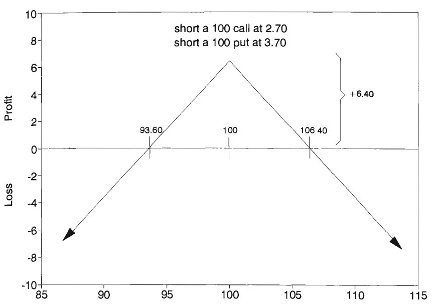
- sell a 95 put for 1.55 and a 105 call for 1.15

- sell the 90 call and purchase the 100 call
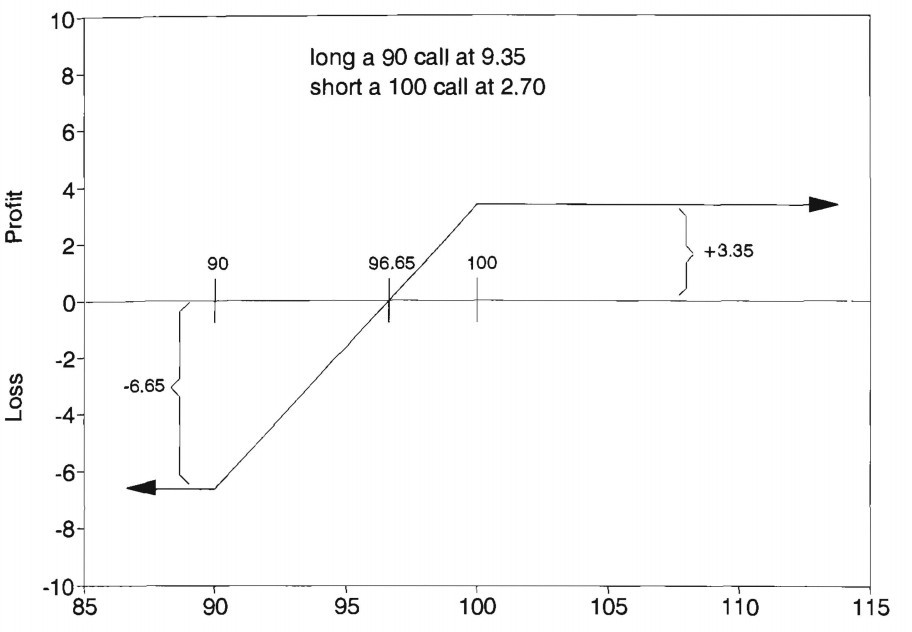
- buy a 105 put for 7.10 and sell a 100 put for 3.70, for a total debit of 3.40

CONSTRUCT AN EXPlRATION GRAPH
- If the graph bends, it wìll do so at an exercise price. Therefore, we can calculate the proflt or 10ss at each exercise price involved and simply connect these points with straight lines.
- If the position is 10ng and short equa1 numbers of cal1s (puts), the potential downside (upside) risk or reward wi11be equal ωthe total debit or credit required to establish the position.
- Ab ove highest exercise price all calls will go into-the-money, so the entire position will act like an underlying position which is either long or short underlying contracts equal to the number of net long or short calls. Below the lowest exercise price all puts will go into-the-money, so the entire position will act like an underlying position which is either long or short underlying contracts equal to the number of net long or short puts.
- example 1
- long one 95 call at 5.50
- short three 105 calls at 1.15


- example 2
- short one 90 cdll at 9.35
- long two 100 calls at 2.70
- short four 95 puts at 1.55
- long two 100 puts at 3.70


- example 3
- long one 100 call at 2.70
- short one 100 put at 3.70
- example 4
- long one 90 put at .45
- short one 100 call at 2.70
- long one underlying contract at 99.00
Introduction to Theoretical Pricing Models
If he purchases options, not only must he be right about market direction, he must also be right about market speed.
The minimum factors you must consider:
- The price of the underlying contract.
- The exercise price.
- The amount of time remaining to expiration.
- The direction in which he expects the underlying market move.
- The speed at which he expects the underlying market to move.
THEORETICAL VALUE
The two most common considerations in a financial investment are the expected return and carrying costs. And, in fact, dividends are an additional consideration in evaluating options on stock.
The goal of option evaluation is to determine, through the use of theoretical pricing models, the theoretical value of an option. The trader can then make an intelligent decision whether the option is overpriced or underpriced in the marketplace, and whether the theoretical edage is sufficient to justify going into the marketplace and making a trade.
A SIMPLE APPROACH
We can now summarize the necessary steps in developing a model:
- Propose a series of possible prices at expiration for the underlying contract.
- Assign an appropriate probability to each possible price.
- Maintain an arbitrage-free underlying market.
- From the prices and probabi1ities in steps 1, 2, and 3, calculate the expected return for the option.
- From the option's expected return, deduct the carrying cost.
In its original form, the Black-Scholes Model was intended to evaluate European options (no early exercise permitted) on non-dividend paying stocks. Shortly after its introduction, realizing that rnost stocks do pay dividends, Black and Scholes added a dividend cornponent. In 1976, Fischer Black rnade slight rnodifications to the rnodel to allow for the evaluation of options on futures contracts. And in 1983, Mark Garman and Steven Kohlhagen made several other modifications to allow for the evaluation of options on foreign currencies. The futures version and the foreign currencyversion are known officially as the Black Model and the Garman-Kohlhagen Model, respectively. But the evaluation rnethod in each version, whether the original Black-Scholes Model for stock options, the Black Model for futures options, or the Garman-Kohlhagen Model for foreign currency options, is so similar that they have all come to be known as simply the Black-Scholes Model. The various forrns of the model differ primarily in how they calculate the forward price of由eunderlying contract, and an option trader will simply choose the form appropriate to the underlying instrument.
In order to calculate an option's theoretical value using the Black-Scholes Model, we need to know at a minimum five characteristics of the option and its underlying contract. There are:
- The option's exercise price.
- The amount of time remaining to expiration.
- The current price of the underlying contract.
- The risk-free interest rate over the life of the option.
- The volatility of the underlying contract.
Black and Scholes also incorporated into their model the concept of the riskless hedge. To take advantage of a theoretically mispriced option，it is necessary to establish a hedge by offsetting the option position with this theoretically equivalent underlying position. That is, whatever option position we take, we must take an opposing market position in the underlying contract. The correct proportion of underlying contracts needed to establish this riskless hedge is known as the hedge ratlo.
Volatility
RANDOM WALKS AND NORMAL DISTRIBUTIONS
Thís leads to an important distínction between evaluation of an underlying contract and evaluation of an option. If we assume at prices are distributed along a normal distribution curve, the value of an underlying contract depends on where the peak of the curve is located, while the value of an option depends on how fast le curve spreads out.
LOGNORMAL DISTRIBUTIONS
A continuously compounded rate of return of +12% yields a profit of $127.50 after one year,while a continuously compounded rate of return of -12% yields a loss of only $113.08.
When price changes are assumed to be normally distributed, the continuous compounding of these price changes wiU cause the prices at maturity to be lognormally distributed.
The Black-Scholes Model is a contínuous time model. It assumes at the volatility of an underlying instrument is constant over the life of the option, but that this volatility is continuously compounded. These two assumptions mean that the possible prices of the underlying instrument at expiration ofthe option are lognormally distributed.
It also explains why options with higher exercise prices caηy more value than options with lower exercise prices,where both exercise prices appear to be an identical amount away from the price of the underlying instrument.
Summarize the most irnportant assurnptions governing price movement int the Black-Scholes Model:
- Changes in the price of an underlying instrurnent are randorn and cannot be artificially manipulated, nor is it possible to predict beforehand direction in which prices will move.
- The percent changes in the price of an underlying instrurnent are norrnally distributed.
- Because the percent changes in the price of the underlying instrurnent are assumed to be continuously cornpounded, the prices of the underlying instrument at expiration will be lognormally distributed.
- The mean of the lognormal distribution will be located at the forward price of the underlying contract.
TYPES OF VOLATILITIES
- Future Volatility: Future volatility is what every trader would like to know, the volatility at best describes the future distribution of prices for an underlying contract.
- Historical Volatility
- Forecast Volatility
- Implied Volatility: It is volatility being implied to the
underlying contract through the pricing of the option in the
marketplace. Even though the term premium real1y refers to an
option's price, it is common among traders to refer to the implied
volati1ity as the premium or premium level. If the current implied
volatility is high by historical standards, or high relative to the
recent historical volatility of the underlying contract, a trader
might say that premium levels are high; if implied volatility is
unusuallylow,he might say that premium levels are low.
He might then look at the difference between each option's theoretical value and its price in marke lace selling any options which were overpriced relative to the theoretical value, and buying any options which were underpriced.
- Seasonal Volatility:
Using an Option's Theoretical Value
The purchase or sale of a theoretically mispriced option requires us to establish a hedge by taking an opposing positlon in the underlying contract. When this is done correctly, for small changes in the price of the underlying, the increase (decrease) in the value of the optlon position will exactly offset the decrease (increase) in the value of the opposing position in the underlying contract. Such a hedge is unbiased, or neutral, as to the direction of the underlying contract.
The number which enables us to establish a neutral hedge under current market conditions is a by-product of theoretical pricing model and is known as the hedge ratio or, more commonly, the delta.
- The delta of a call option is always somewhere between 0 and 1.00.
- The delta of an option can change as market conditions change.
- An underlying contract always has a delta of 1.00.
The steps we have thus far taken illustrate the correct procedure in using an option theoretical value:
- Purchase (sell) undervalued (overvalued) options.
- Establish a delta neutraI hedge against the underlying contract.
- Adjust the hedge at regular intervals to remain delta neutral.
At that time we plan to close out the position by:
- Letting any out-of-the-money options expire worthless.
- Selling any in-the-money options at parity (intrinsic value) or, equiva1ently, exercising them and offsetting them against the underlying futures contract.
- Liquidating any outstanding futures contracts at the market price.
1n a frictionless market we assume that:
- Traders can freely buy or sell the underlying contract without restriction
- AlI traders can borrow and lend money at the same rate.
- Transaction costs are zero.
- There are no tax considerations.
Option Values and Changing Market Conditions
THE DELTA
three interpretations of delta:
- the hedge ratio
- Rate of Change in the theoretical value: The de1ta is a measure of how an optio 's value changes with respect to a change in the price of the underlying contract.
- Theoretical or Equivalent Underlying Position
THE GAMMA
The gamma sometimes referred to as the curvature of an option, is the rate at which an option's delta changes as the price of the underlying changes.
If an option has a gamrna of 5for each point rise (fal1) in the price of the und.erlying,the option will gain (lose) 5 de1tas.
Every option trader learns to look carefully not only at current directional risk (the delta), but also at how that directional risk will change if the underlying market begins ωmove (the gamma).
THE THETA
The theta(θ) ，or tíme decay factor,is the rate at which an option loses value as time passes.
THE VEGA OR KAPPA
The vega of an option is usually given in point change ín theoretical value for each one percentage point change in volatility.
Since vega is not a Greek letter, a common alternative in academic literature, where Greek letters are preferred, is kappa (K).
THE RHO
The sensitivity of an optio 's theoretical value to a change in interest rates is given by its rho (P).
SUMMARY
- Delta: Deltas range from zero for far out-of.the-money calls to 100
for deeply in-the-money calls, and from zero for far
out-of-the-money puts to -100 for deeply in-the-money puts.
At-the-money calls have deltas of approximately 50, and at-the-money puts approximately -50.
As time passes,or as we decrease our volatility assumption,call deltas move away om 50,and puts deltas away from -50. As we increase our volatility assumption, cal1 deltas move towards 50, and put deltas towards -50.
- Gamma: At-the-money options have greater gammas than either in- or
out-of-the-money options with otherwise identical contract
specifications.
As we increase our volati1ity assumptíon, the gamma of an in~ or out-of~the~money option rises, while gamma of an at le~money option falls. As we decrease our volatility assumption, or as time to expiration grows shorter, the gamma of an in~ or out-of~the money option falls, while the gamma of an at~the-money option rises, sometimes dramatically.
- Theta: At-the~money options have greater etas than either in~ or
out~ofthe-money options with otherwise identical contract
specifications.
The theta of an at-the-money option increases as expiration approaches. A short-term, at-the-money option will a1 ways decay more quickly than a long-term, at-the-money option.
As we increase (decrease) our volatility assumption, the theta of an option will rise (fall). Higher volatility means there is greater time value associated with the option, so at each day's decay wil1 also be greater when no movement occurs.
- Vega: At-the-money options have greater vegas than either in- or
out-ofthe-money options With otherwise identical contract
specifications.
Out-of-the-money options have the greatest vega as apercent of theoretical value.
The various positions and their respective signs are given in Figure 6-26. The sign of the delta， gamma, theta, or vega, toge er with the magnitude of the numbers, tel1 the trader which changes in market conditions will either help or hurt his position, and to what degree. The positive or negative effect of changing market conditions is summarized in Figure 6-27.
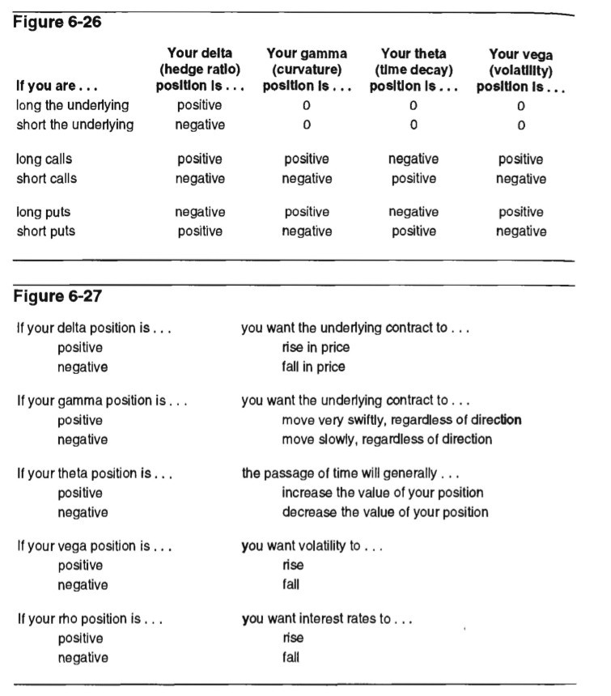
An option's elasticity, sometimes denoted with the Greek letter omega(or less commonly the Greek letter lambda), is the relative percent change in an option's value for a given percent change in the price of the underlying contract.
The elasticity is sometimes referred to as the option's leverage value. The greater an option's elasticity, the more highly leverage the option.
An easy method of calculating:
elasticity = (underlying price) / (theoretical value) * delta
Introduction to Spreading
Spreading is simply a way of enabling an optlon trader to take advantage of theoretlcally mispriced options, while at the same time reducing the effects of short-term changes in market conditions so that he can safely hold an optlon positlon to maturity.
WHY SPREAD?
At some point the intelligent trader will have to consider not only the potential profit, but also the risk associated with a strategy.
No trader will survive very long if his livelihood depends on estimating each input with 100% accuracy. Even when he incorrectly estimates the inputs, the experienced trader can survive if he has constructed intelligent spread strategies which allow for a wide margin of error.
Volatility Spreads
Regardless ofwhich method we choose, each spread will have certain features in common:
- Eachspread will be approximately delta neutral.
- Each spread will be sensitive to changes in the price of the underlying instrument.
- Each spread will be sensitive to changes in implied volatility.
- Each spread wil1 be sensitive to the passage of time.
BACKSPREAD
A backspread is a delta neutral spread which consists of more long (purchased) options than short (sold) options where all options expire at the same time.
A call backspread consists of long calls at a higher exercise price and short calls at a lower exercise price. A put backspread consists of long puts at a lower exercise price and short puts at a higher exercise price.
If no movement occurs, a backspread is likely to be a losing strategy.
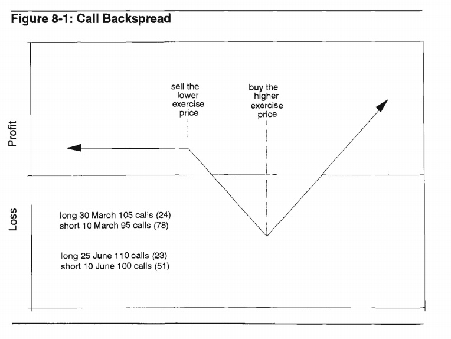

A trader will tend ωchoose the type ofbackspread which reflects his opinion about market direction. If he foresees a market with great upside potential, he will tend to choose a call backspread; if he foresees a market with great downside potential he will tend to choose a put backspread. He will avoid backspreads in quiet markets since the underlying contract is unlikely to move very far in either direction.
RATIO VERTICAL SPREAD
A trader who takes the opposite side of a backspread also has a delta neutral spread, but he is short more contracts than long, with all options expiring at the same time. Such a spread is sometimes referred to as a ratio spread or a vertical spread.
Designate the opposite of a backspread as a ratio vertical spread.

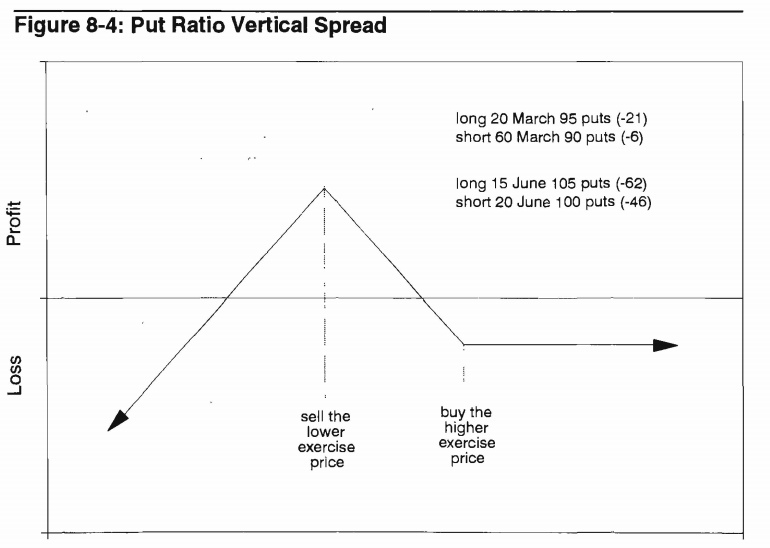
STRADDLE
A straddle consists of either a long call and a long put, or a short call and a short put, where both options have the same exercise price and expire at the same time.
If both the call and put are purchased, the trader is said to be long the straddle; if both options are sold, the trader is said to be short the straddle.

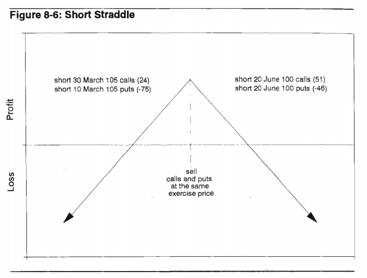
STRANGLE
Like a straddle, a strangle consists of a long call and a long put, or a short call and a short put, where both options expire at the same time. In a strangle, however， the options have different exercise prices. If both options are purchased, the trader is long the strangle if both options are sold, the trader is short the strangle.


To avoid confusion a strangle is commonly assumed to consist of out-the-money options. If the underlying market is current1y at 100 and a trader wants to purchase the June 95/105 strangle, it is assumed that he wants to purchase a June 95 put and a June 105 call. When both options are in-the-money, the position is sometimes referred to as a guts.
BUTTERFLY
A butterfly consists of options at three equally spaced exercise prices, where all options are of the same type (either all calls or all puts) and expire at the same time.
In a long butterfly the outside exercise prices are purchased and the insíde exercise price is s01d, and vice versa for a short butterfly.
It is always 1 x 2 x 1, with two of each inside exercise price traded for each one of the outside exercíse prices. If the ratio is other than 1 x 2 x 1, the spread is no longer a butterfly.


a long butterfly tends to act like a ratio vertica1 spread and a short butterfly tends to act like a backspread.
TIME SPREAD (calendar spread or horizontal spread)
Time spreads, sometimes referred to as calendar spreads or horizontal spreads, consist of opposing positions whlch expire in different months. The most common type of time spread consists o
The most common type of time spread consists of opposing positions in two options of the same type (either both calls or both puts) where both options have the same exercise price. When the long-term option is purchased and the short-term option is sold, a trader is long the time spread; when the short-term option is purchased and the long-term option is sold, the trader is short the time spread.
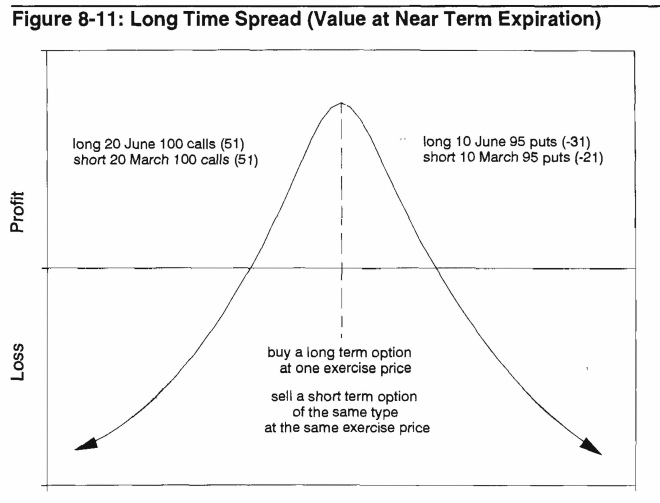
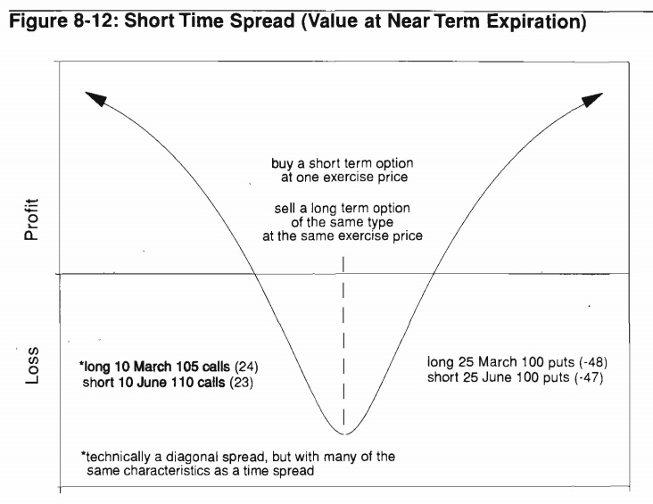
If we assume that the options making up a time spread are approxjmately at-the-money, time spreads have two important characteristics:
- A long time spread always wants the underlying market sit still. Since a short-term at-the-money option always decays more quickly than a longterm at-the-money option, regardless of whether the options are calls or puts, both a long call time spread and a long put time spread want the underlying market to sit sti1l. Ideally, both spreads would like the short-term option to expire right at-the-money so that the long-term option will retain as much time value as possible while the short-term option expires worthless.

- A long time spread always benefits jrom an increase in implied volatility. As time to expiration increases, the vega of an option increases. This means that a long-term option is always more sensitive in total points to a change in volatility than a short-term option with the same exercise price.
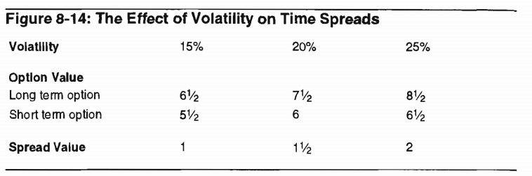
These two opposing forces, the decay in an option's value due to the passage of time and the change in an option's value due to changes in volatility, give time spreads their unique characteristics. When a trader buys or sel1s a time spread, he is not only attempting to forecast movement in the underlying market. He is剖sotrying to forecast changes in imp1ied volatility.
THE EFFECT OF CHANGING INTEREST RATES AND DIVIDENDS
If we are considering stock options with different expiration dates,we mut consider two different forward prices. Andthese two forward prices may not be equaly sensitive to a change in interest rates.
If interest rates increase，the time spread will widen because the June forward price will rise more quickly than the March forward price. Therefore, a long (short) call time spread in the stock option market must have a positive (negative) rho.
if interest rates increase, the put time spread will narrow. Therefore, a long (short) put time spread in the stock option market must have a negative (positive) rho.
An increase (decrease) in dividends lowers (raises) the forward price of stock.
In a time spread, if a dividend payment is expected between expiration of the short-term and long-term option, the long-term option will be affected by the lowered forward price of the stock. Hence, an increase in dividends, if at least one dividend payment is expected between the expiration dates, will cause call time spreads to narrow and put time spreads to widen. A decrease in dividends will have the opposite effect, with call time spreads widening and put time spreads narrowing. The effect of changing interest rates and dividends on stock option time spreads is shown below:

DIAGONAL SPREADS
A diagonal spread Is similar to a time spread, except that the options have different exercise prices.
OTHER VARIATIONS
A Christmas tree (also referred to as a ladd is a term which can be applied to a variety of spreads. The spread usually consists of three different exercise prices where all options are of the same type and expire at the same time. In a long (short) call Christmas tree, one call is purchased (sold) at the lowest exercise price,and one call is sold (purchased) at each of the higher exercise prices. In a long (short) put Christmas tree, one put is purchased (sold) at the highest exercise price, and one put is sold (purchased) at each of the lower exercise prices.
Long Christmas trees , when done delta neutral， can be thought of as particular types of ratio vertical spreads. Such spreads therefore increase in value if the underlying market either sits still or moves very slowly. Short Christmas trees can be thought of as particular types of backspreads, and therefore increase in value with big moves in the underlying market.
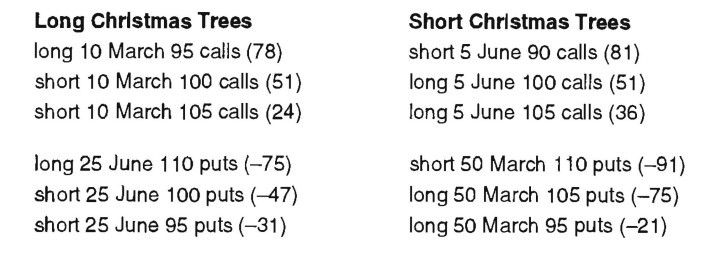
It is possible to construct a spread which has the same characteristics as a butterfly by purchasing a straddle (strangle) and selling a strangle (straddle) where the straddle is executed at an exercise price midway between the strangle's exercise prices. All options must expire at the same time. Because the position wants the same outcome as a butterfly, it is known as an iron butterfly.
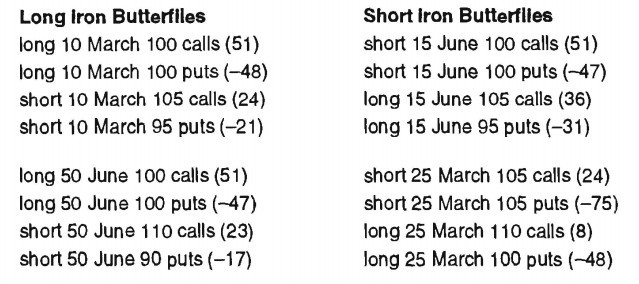
Another variation on a butterfly, known as a condor, can be constructed by splitting the inside exercise prices. Now the position consists of four options at consecutive exercise prices where the two outside options are purchased and the two inside options sold (a long condor), or the two inside options are purchased and the two outside options sold (a short condor). As with a butterfly, all options must be of the same type(all calls or all puts) and expire at the same time.
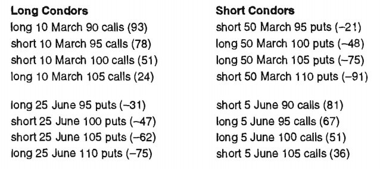
SPREAD SENSITIVITIES
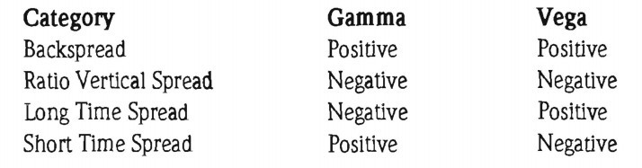
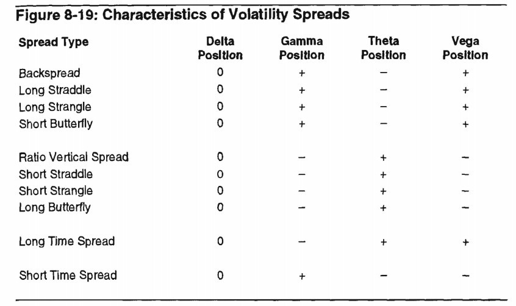
CHOOSING AN APPROPRlATE STRATEGY
With so many spreads avai1 able, how do we know which type of spread is best?
Ideally, we would like ωconstruct a spread by purchasing options which are underpriced and se1li ng options which are overpriced.
If options general/y appear underprtced (low implied volatility), look for spreads with a positive vega. This includes strategies in backspread or long time spread category. !f options generally appear overpriced (high implied volatility)，look for spreads wtth a negative vega. This includes strategies in the ratio vertical or short time spread category.
Long time spreads are likely to be profitable when implied volatility is low but is expected to rise; short time spreads are likely to be profttable when implied volatility is high but is expected to fail.
ADJUSTMENTS
The optimum use of a theoretical pricing model requires a trader to continuously maintain a delta neutral position throughout the life of the spread.
- Adjust at regular intervals – In theory, the adjustment process is assumed to be continuous because volatility is assumed to be a continuous measure of the speed of the market.
- Adjust when the positlon becomes a predetermlned number 01 deltas or short.
- Adjust by feel.
ENTERING A SPREAD ORDER
The following contingency orders, all ofwhich are defined in Appendix A, are often used in option markets:
All Or None
Fill Or Kill
Immediate Or Cancel
Market If Touched
Market On Close
Not Held
One Cancels The Other
Stop Umit Order
Stop Loss Order
Risk Considerations
CHOOSING THE BEST SPREAD
We can summarize these risks as follows:
- Delta (DirectionaI) Risk-The risk that the underlying market will move in one direction rather than another. When we create a position which is delta neutral, we are trying to ensure that initially the position has no particular preference as to the direction in which the underlying instrument will move. A delta neutral position does not necessarily eliminate all directional risk, but it usually leaves us immune to directional risks within a limited range.
- Gamma (Curvature) Risk -The risk of a large move in the underlying contract, regardless of direction. The gamma position is a measure of how sensitive a position is to such large moves. A positive gamma position does not really have gamma risk since such a position will, in theory, increase in value with movement in the underlying contract. A negative gamma position, however, can quickly lose its theoretical edge with a large move in the underlying contract. The consequences of such a move must always be a consideration when analyzing the relative merits of different positions.
- Theta (Time Decay) Risk一Therisk that time will pass with no movement in the underlying contract. This is the opposite side of gamma risk. Positions with positive gamma become more valuable With large moves in the underlying. But if movement helps, the passage of time hurts. A positive gamma always goes hand in hand with a negative theta. A trader with a negative theta will always have to consider the risk in terms of how much time can pass before the spread's theoretical edge disappears. The position wants movement, but if the movement fails to occur within the next day, or next week, or next month, will be spread, in theory, still be profitable?
- Vega (Volatility) Risk — The risk that the volatility which we input into the theoretical pricing model will be incorrect. If we input an incorrect volatility, we will be assuming an incorrect distribution of underlying prices over time. Since some positions have a positive vega and are hurt by declining volatility, and some positions have a negative vega and are hurt by rising volatility, the vega represents a risk to every position. A trader must always consider how much the volatility can move againsthim before thepotential profit from a position disappears.
- Rho (Interest Rate) Risk-The risk that interest rates will change over the life of the option. A position with a positive rho will be helped (hurt) by an increase (decline) in interest rates, while a position with a negative rho wil1 show just the opposite characteristics. Generally, the interest rate is the least important of the inputs into a theoretical pricing model, and it is unlikely, except for special situations, that a trader will give extensive thought to rho risk associated with a position.
PRACTICAL CONSIDERATIONS
While there is no substitute for experience, most traders quickly learn an important rule: straddles and strangles are the riskiest of all spreads.
HOW MUCH MARGIN FOR ERROR?
Perhaps a better way to approach the question is to ask not what is a reasonable margin for error, but rather to ask what is the correct size in which to do a spread given a known margin for error.
DIVIDENDS AND INTEREST
WHAT IS A GOOD SPREAD?
It is impossible ωtake into consideration everypossible risk. A spread which passed every risk test would probably have so little theoretical edge that it wouldn't be worth doing. But the trader who allows himself a reasonable margin for error will find that even his losses will not lead to financial ruin. A good spread is not necessarily the one that shows the greatest proflt when things go well; it may be the one which shows the least loss when things go badly. Winning trades always take care of themselves. Losing trades, which don't glve back al1 the profits from the winning ones, are just as important.
ADJUSTMENTS
An adjustment to trader's delta position may reduce his directional risk, but if he simultaneously increases his gamma, theta, or vega risk, he may inadvertently be exchanging one type of risk for another.
- A delta adjustment made with the underlying contract is essentially a risk neutral adjustment.
- An adjustment made with options may reduce the delta risk, but will also change the other nsk characteristfcs assocíated wtth the position.
A disciplined trader knows that sometimes, because of risk considerations, the best course ls to reduce the size of the spread, even if it means gi.ving up some theoretical edge. This may be hard on the trader's ego, particular1y 1f he must personally go back into the market and either buy back options which he originally sold at a lower price, or sell out options whîch he originally purchased at a higher price. However, if a trader is unwilling to swallow his pride from time to time, and admit that he made a mistake, his trading career is certain to be a short one.
If a trader finds that any de1ta adjustment in the option market that reduces his risk will also reduce his theoretical edge，and he is unwil1ing to give up any theoretical edge, his only recourse is to make h1s adjustments in the underlying market. An underlying contract has no gamma, theta, or vega, so the risks of the position will remain essentially the same.
A QUESTION OF STYLE
In practice, however, many option traders begin theîr trading careers by taking positions in the underlying market, where direction is the primary consideration. Many traders therefore deve10p a style of trading based on presumed directional moves in the underlying market. A trader might，for examp1e, be a trend follower, adhering to the philosophy that "the trend is your friend." Or he might be a contrarian. preferring to "buy weakness, sell strength."
LIQUIDITY
An important consideration in deciding whether to enter into a trade is often the ease with which the trader can reverse the trade. Liquid option markets, where there are many buyers and sellers, are much less risky than illiquid markets, where there are few buyers and sellers. In the same way, a spread which consists of very liquid options is much less risky出ana spread which consists of one or more illiquid options.
Bull and Bear Spreads
NAKED POSITIONS
If all options are overpríced (high implied volatility), we might sell puts to create a bullish position, or sel1 calls to create a bearish position. If al1 options are underpriced (low implied volatility), we might buy calls ωcreate a bullish position, or buy puts to create a bearish position.
The problem with this approach is that，as with all non-hedged positions, there is very llttle margin error.
BULL AND BEAR RATIO SPREADS
If a trader believes that implied volatility is too hlgh, one sensible strategy is a ratio vertical spread.
Even though the trader was correct ín his bullish sentiment, the position was primarily a volatility spread, so that the volatility characteristics of the position eventually outweighed any considerations of market direction.
Since this spread is a volatility spread, the primary consideration, as before, is the volatility of the market. Only secondarily are we concerned with the direction of movement. If the trader overestimates volatility, and the market moves more slowly than expected, the spread which was initially de1ta positive can instead become delta negative.
BULL AND BEAR BUTTERFLIES AND TlME SPREADS
If the underlying market is currently at 100, he might choose to buy the June 105/110/115 call butterfly. Since this position wants the underlying market at 110 at expiration, and it is currently at 100, the position is a bull butterfly. This will be reflected in the position having a positive delta.
Unfortunately, if the underlying market moves too swift1y, say to 120, the butterfly can invert from a positive to a negative delta position.
Conversely, if the trader is bearish, he can always choose to buy a butterfly where the inside exercise price is below the current price of the underlying market. But again, if the market moves down too quickly and goes through the inside exercise price, the position will invert from a negative to a positive delta.
In a simi1ar manner, a trader can choose time spreads 由atare either bul1ish or bearish. A long time spread always wants the near-term contract to expire exactly at-the-money. A long time spread will be initial1y bullish if the exercise price of the time spread is above the current price of the underly1ng market.
VERTICAL SPREADS
Vertical spreads are not on1y initially bullish or bearish, but they remain bullish or bearish no matter how market conditions change. A vertical spread always consists of one long (purchased) option and one short (sold) option, where both options are of the same type (either both calls or both puts) and expire at the same time. The options are distinguished only by their different exercise prices. Typical vertical spreads might be:
buy 1 June 100 call
sell 1 June 105 cal1
or
buy 1 March 105 put
sell 1 March 95 put
If a trader wants to do a vertical spread, he has essentially four choices. If he is bullish he can choose a bull vertical call spread or a bull vertical put spread; if he is bearish he can choose a bear vertical call spread or a bear vertical put spread. For example:
bull call spread: buy a June 100 call
sell a June 105 call
bull put spread: buy a June 100 put
sell a June 105 put
bear call spread: sell a June 100 call
buy a June 105 call
bear put spread: sell a June 100 put
buy a June 105 put
Two factors determine the total directional characteristlcs of a vertlcal spread:
- The delta of the specific vertical spread
- The size in which the spread is executed
The greater the distance between exercise prices, the greater the delta value associated with the spread. A 95/110 bull spread wil1 be more bullish than a 100/110 bull spread, which will, ín turn, be more bullish than a 100/105 bull spread.
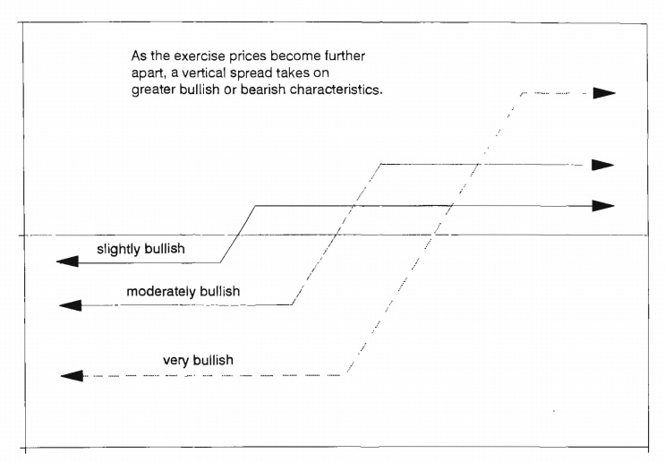
Once a trader decides on an expiratlon month in which to take his directlonal position, he must decide which specific spread is best. That is, he must decide which exercise prices to use. A common approach is focus on the at-the-money optlons. If a trader does this, he will have the fol1owing choices:
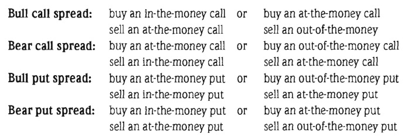
The reason becomes clear if we recall one of the characteristics of option evaluation introduced in Chapter 6: If we consider three options, an in-the-money， at-the-money， and out-of-the-money option which are identical except for their exercise prices, the at-the-money option is always the most sensitive in total points to a change in volatility.
This characteristic leads to a very simple rule for choosing bull and bear vertical spreads:
If implied volatility is too low, vertical spreads should focus on purchasing the at-the-money optlon. If implied volatility is too high, vertical spreads should focus on selling the at-the-money options.
A trader is not required to execute any vertical spread by first buying or selling the at-the-money option. Such spreads always involve two options, and a trader can choose to either execute the complete spread in one transaction, or leg into the spread by trading one option at a time. Regardless of how the spread is executed, the trader should focus on the at-the-money option, either buying it when implied volatility is too low, or selling it when implied volatility is too high.
The choice of the at-the-money option is slightly different when we move to stock options. If we define the at-the-money option as the one whose de1ta is closest to 50, then we may find at the at-the-money option is not always the one whose exercise price is closest current price of the underlying contract. This ís because the option with a delta closest 50 will be the one whose exercise price ís closest to forward price of underlying contract. In stock options, the forward price is the current price of stock, plus carrying costs on the stock, less expected dividends.
Why míght a trader with a directional opinion prefer a vertical spread to an outright long or short posítíon in the underlying instrument? For one thing, a vertical spread is much less risky than an outright posítion. Atrader who wants to take a position which is 500 deltas long can either buy fíve underlying contracts or buy 25 vertical calI spreads with a delta of 20 each. The 25 vertical spreads may sound riskier than five underlying contracts, until we remember at a vertical spread has limited risk whíle the position in underlying has open-ended risk. Of course,greater risk also means greater reward. A trader with a long or short position in the underlyíng market can reap huge rewards if the market makes a large move in his favor. By contrast,the vertical spreader's profits are limited,but he will also be much less bloodied if the market makes an unexpected move in the wrong direction.
Option Arbitrage
SYNTHETIC POSITIONS
- synthetic long underlying = long call + short put
- synthetic short underlying = short call + long put
where all options expire at the same time and have the same exercise price.
Rearranging the components of a synthetic underling position, we can create four other synthetic relationships:
- synthetic long call = long an underlylng contract + long put
- synthetic short call = short an underlying contract + short put
- synthetic long put = short an underlying contract + long call
- synthetic short put = long an underlying contract + short call
The difference between the call and put price ís often referred to as the synthettc market. In the absence of any interest or dividend considerations, the value of the synthetic market can be expressed as:
call price -put price = underlying price - exercise price
If this equality holds, there ís no difference between taking a position in the underlying market, or taking an equivalent synthetic position in the option market.
The three-sided relationship between a call, a put, and its underlying contract means that we can always express the value of any one of these contracts in terms of the other two:
- underlying price = call prîce - put prîce + exercíse price
- call prîce = underlying price + put príce - exercíse price
- put price = call prîce - underlying prîce + exercise price
This three-sided relationship is sometimes referred put-call parity.
CONVERSIONS AND REVERSALS
When a trader identifies two contracts which are essentially the same but which are trading at different prices, the natural course ís to execute an arbitrage by purchasing the cheaper contract and selling the more expensive.
No matter what happens in the underlying market, the underlying position will do exactly .25 better than the synthetìc position. The entire position wíll therefore show a profit of .25, regardless of movement in the underlying market.
The foregoing position, where the purchase of an underlying contract is offset by the sale of a synthetic position, is known as a conversion. The opposíte position, where the sale of an underlying contract is offset by the purchase of a synthetic position, is known as a reverse conversion or, more commonly, a reversal.
Summarizing:
conversion = long underlying + synthetlc short underlying = long underlying + short call + long put reversal = short underlying + synthetic long underlying = short underlying + long call + short put
As before, we assume that the call and the put have the same exercise price and expiration date.
Typically, an arbitrageur will attempt to simultaneously buy and sell the same items in different markets to take advantage of price discrepancies between the two markets.
Synthetic positions are often used to execute conversions and reversals, so traders sometimes refer to the synthetic market (the difference between the call price and put price) as the converston/reversal market.
All experienced traders are familiar with the price relationship between a synthetic position and its underlying contract, so that any imbalance in the conversion/reversal market is 1ikely to be short-lived. If the synthetic is overpriced, all traders will want to execute a conversion (buy the underlying, sell the call, buy the put). If the synthetic is underpriced, all traders will want to execute a reversal (sell the underlying, buy the call, sell the put). Such activity, where everyone is attempting to do the same thing, will quickly force the synthetic market back to equilibrium. Indeed, imbalances in the conversion/reversal market are usually small and rarely last for more than a few seconds.
- Futures Option Markets
If the cash flow resulting from an option trade and a trade in the underlying instrument is identical, the synthetic relationship is simply:
call price - put price = underlying price - exercise price
This will be true if interest rates are zero, or in futures markets where both the underlying contract and options on that contract are subject to futures-type settlement.
Assuming that all options are European (no early exercise permitted), we can now express the synthetic relationship in futures markets where the options are settle in cash as follows:
cal1 price - put price = futures price - exercise price - carrying costs
where the carrying costs are calculated on either the difference between the futures price and the exercise price, or the difference between the call price and put price, both of which will be approximately the same.
- Stock Option Markets
Taking into consideration the interest rate component, we can express the synthetic relationship as:
call price - put price = stock price - exercise price + carrying costs
where the carrying costs are calculated on the exercise price.
call price -put price = stock price - exercise price + carrying costs - dividends
where the carrying costs are calculated on the exercise price and the dividends are those expected prior to expiration.
ARBITRAGE RISK
- Interest Rate Risk
- Execution Risk
Anytime a strategy is executed one leg at a time, there is always the risk of an adverse change in prices before the strategy can be completed.
- Pin Risk
The practical solution is to avoid carrying conversions and reversals to expiration when there is a real possibility of expiration right at the exercise price.
- Settlement Risk in the Futures Market
If al1 contracts are subject to futures-type settlement, any credit or debit resulting from changes in the price of the underlying futures contract wil1 be offset by an equal but opposite cash flow from changes in prices of the option contracts.
- Dividend Risk in the Stock Market
BOXES
The risk arises because a synthetic position in options and an actual position in the underlying contract can have different characteristics， either in terms of settlement procedure, as in the futures option market, or in terms of the dividend payout, as in the stock option market.
How might we eliminate this risk?
short a call long a put long an underlying contract
replace the long underlyingpositlon with a deeply in-the-money call Now our position is:
short a call long a put long a deeply in-the-money call
instead of replacing the underlying position with a deeply in-the-money call, we can sell a deeply in-the-money put:
short a cal1 long a put short a deeply in-the-money put
This type of position, where the underlying instrument in a conversion or reversal is replaced with a deeply in-the-money option, is known as a three-way.
Suppose we also execute a reversal at 90:
long a June 90 call short a June 90 put short an underlying contract
short a June 100 call long a June 100 put long an underlying contract
The long and short underlying contracts cancel out, leaving:
long a June 90 call short a June 90 put
short a June 100 call long a June 100 put
This position, known as a box, is similar to a conversion or reversal, except that any risk associated with holding a position in the underlyíng contract has been eliminated because the underlying position has been replaced with a synthetic underlying position at a different exercise price.
Since a box eliminates the risk associated with carrying a position in the underlying contract, boxes are even less risky than conversions and reversals, which are themselves low-risk strategies.
JELLY ROLLS
Another method of eliminating a position in the underlying contract is to take a synthetic position in a different expiration month, rather than at a different exercise price as with a box.
For example, suppose we have executed the following reversal:
long a June 100 call short a June 100 put short an underlying contract
short a September 100 call long a September 100 put long an underlyíng contract
If the underlyíng contract for bothJune and Septernber is identical, theywil1 cancel out, leaving us with:
long a June 100 cal1 short a June 100 put
short a September 100 cal1 long a September 100 put
These combined long and short synthetic positions taken at the same exercise prices but in different expiration months is known as a jelly roll or simplya roll.
The value of the roll is the cost of holding the stock for the three-month period from June to September.
jelly roll = long-term synthetic - short-term synthetic = (long-term call-long-term put) - (short-term call-short-term put) = (long-term call-short-term call) - (long-term put - short-term put) = caηying costs - expected dividends
USING SYNTHETICS IN VOLATILITY SPREADS
the synthetic relationship:
synthetic short cal1 = short put + short underlying
TRADING WITHOUT THEORETICAL VALUES
Regardless of the exact theoretical value, there ought to be a uniform progression of both individual option prices and spread prices in the marketplace. If this uniform progression is violated, a trader can take advantage of the situation by purchasing the option or spread which is relatively cheap and selling the option or spread which is relatively expensive.
The trader can start with conversions and reversals, then look at vertical spreads and butterflies, and finally consider straddles and time spreads.
Early Exercise of American Options
- Given the opportunìty, under what cìrcumstances might a trader consìder exercising an American option prior to expiration?
- How much more should a trader be wi1ling to pay for an American option over an equivalent European option?
FUTURES OPTIONS
option value = ìntrinsic value + volati1ìty value -interest rate value
A trader who exercises a futures option early does so to capture the interest on the option's intrinsic value. This intrinsic value will be credited to his account only if the option is subject to stock-type settlement.
STOCK OPTIONS
- Early Exercise of Calls for the Dividends
call value = intrînsic value + interest rate value + volatility value - dividend value
Since the only reason a trader would ever consider exercising a stock option call early is to receive the dividend, if a stock pays no dividend there is no reason to exercise a call early. If the stock does paya dividend, the only time a trader ought to consider early exercise is the day before the stock goes ex-dividend. At no other time in its life is a stock option call an early exercise candidate.
- Early Exercise of Puts for Interest
put value = intrinsic value - interest rate value + volatility value + dividend value
Whereas a stock option call can only be an early exercise candidate on the day prior to the stock's ex-dividend date, a stock option put can become an early exercise candidate anytime the interest which can be earned through the sale of the stock at the exercise price is sufficiently large.
- Conditions for Early Exercise
infer two conditions which are necessary before a trader considers exercising option early to capture is additional profit:
- The option must be trading at parity.
- The option must have a delta close to 100.
The importance of early exercise is greatest when the underlying contract is a stock or physical commodity. In such a case there is a significant difference between the carrying cost on an option and the caπyi cost on underlying position. This difference will especially affect the difference between European and Am erican put values, since early exercise wil1 allow the trader to earn interest on the proceeds from the sale at the exercise price. An option trader in either the stock or physical commodity market will find that the additional accuracy offered by an American model, such as the Cox-Ross-Rubenstein or Whaley models,will indeed be worthwhile.
THE EFFECT OF EARLY EXERCISE ON TRADING STRATEGIES
Hedging with Options
PROTECTIVE CALLS AND PUTS
The simplest wayωhedge an underlying position using optìons is to purchase either a call to protect a short position, or a put to protect a long position.
Since each strategy combines an underlying position with an option position, it follows from Chapter 11 that the resulting protected position is a synthetic option:
short underlying + long call = long put long underlying + long put = long call
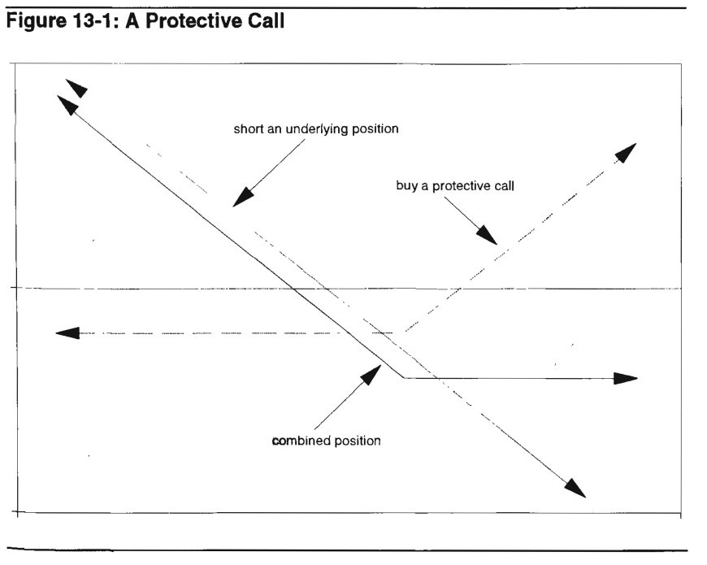
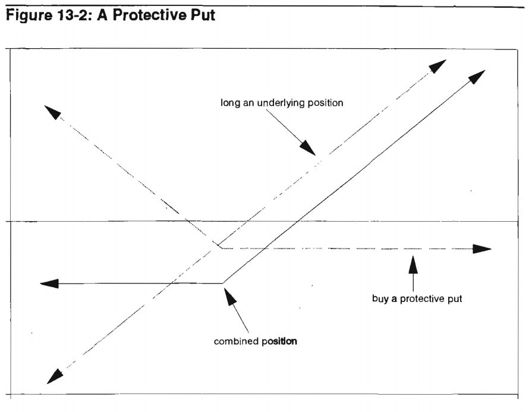
COVERED WRITES
The value of typical covered writes,also known as overwrites, are covered call and covered put.
As with the purchase of a protective optlon, a covered write consists of a position in the under ng and an option. It can therefore be expressed as a synthetic position:
long underlying + short call = short put short underlying + short put =short call
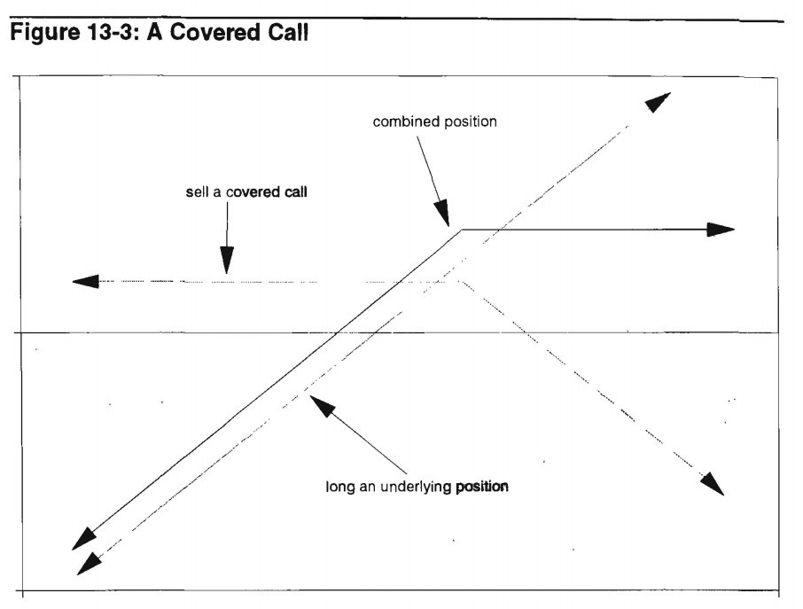
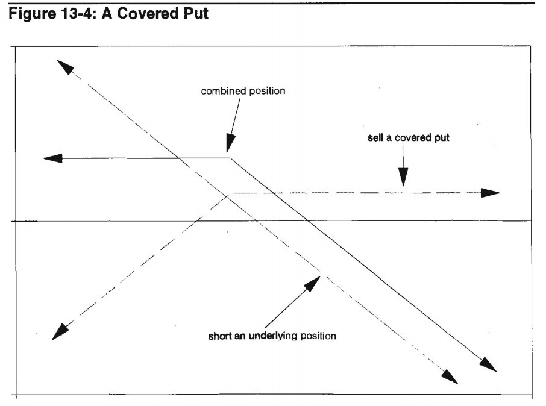
FENCES
A popular strategy, known as a fence, is to simultaneously combine the purchase of a protective option with the sale ofa covered option. For example, with an underlying contract at 50, a hedger with a long position might choose to simultaneously sell a 55 call and purchase a 45 put.
Fences are popular hedging tools because they offer known protection at alow cost, or even a credit. At the same time ，they still allow a hedger to participate, at least partially, in favorable market movement. Fences go by a variety of names: range forwards, tunnels, cylinders; among floor traders they are sometimes known as split price conversions and reversals.
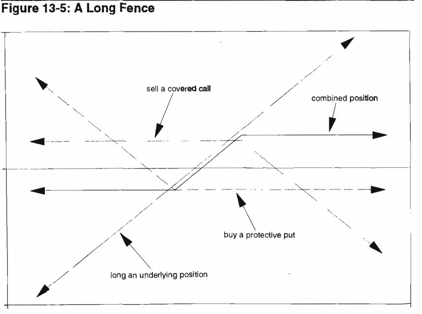
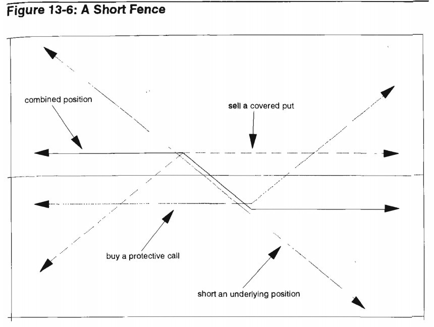
COMPLEX HEDGING STRATEGIES
As a first step in choosing a strategy, a hedger might consider the following:
- Does the hedge need to offer protection against a I'worst case" scenario?
- How much of the current directional risk should the hedge eliminate?
- What additional risks is the hedger willing to accept?
ll otnel ctors being equal, in a high implied volatility market a hedger should buy as few options as possible and sell as many options as possible. Conversely, in a low implied volatility market a hedger should buy as many options as possible and sell as few options as possible.
A hedger who constructs a position with unlimited risk in either direction is presumably taking a volatility position. There is nothing wrong with this, since volatility trading can be highly profitable. But a true hedger ought not lose sight of what his ultimate goal is: to protect an existing position, and to keep the cost of this protection as low as possible.
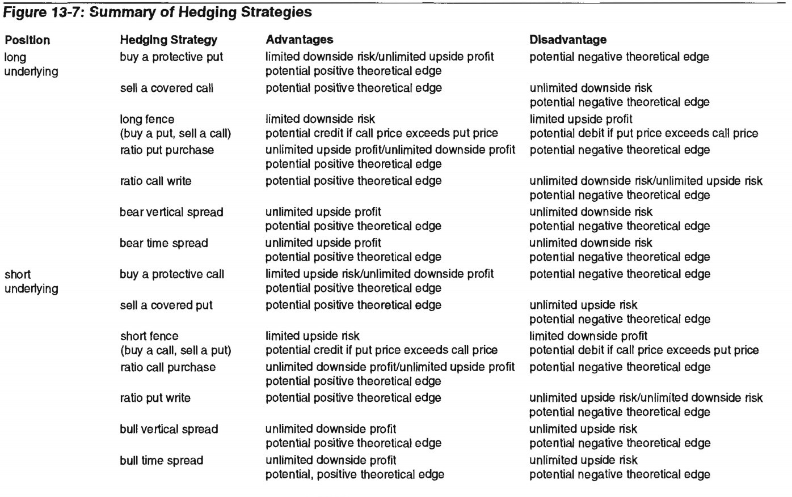
PORTFOLIO INSURANCE
if he wants to replicate the combination of the underlying asset and the 100 put, he must sell off 43% of his holdings in the asset. When he does that, he will have a position theoretically equivalent to owning a 100 call.
This process ofcontinuously rehedging an underlying position to replicate an option position is often referred to as portfolio insurance.
If the mix of securities in a portfolio approximates an index, and futures contracts are available on that index, the manager can approximate the results of portfolio insurance by purchaslng or selling futures contracts to increase or decrease the holdings in his portfolio.
Even if options are available on an underlying asset, a hedger may still choose to effect a portfolio insurance strategy himself rather then purchasing the option in the marketplace. For one thing, he may consider the option too expensive. If he believes the option is theoretically overpriced, in the long run it will be cheaper to continuously rehedge the portfo1io. Or he may find insufficient liquidity in the option market to absorb the number of option contracts he needs to hedge his position. Finally, the expiration of options which are available may not exactly correspond to the period over which he wants to protect his position. If an option is available, but expires earlier than desired, the hedger might still choose to purchase options in marketplace, and then pursue a portfolio insurance strategy over the period following the option's expiration.
Volatility Revisited
SOME VOLATILITY CHARACTERISTICS
we might surmise at an underlying contract is likely to have a typicallong-term average,or mean volatility. Moreover,the volatility of the underlying contract appears to be mean reverting. When volatility rises above the mean, one can be fairly certain that it will eventually fall back to its mean; when volatility fal1 s below the mean, one can be fairly certain that it will eventual1y rise to its mean.
VOLATILITY FORECASTING
In addition ωthe mean reverting characteristic, volatility also tends to exhibit sen.al correlatton. The volatility over any given period is likely ωdepend on, or correlate with, the volatility over the previous period, assuming that both periods cover the same amount of time. If the volatilityofa contract over the last fourweeks was 15% , the volatility over the next four weeks is more likely to be close to 15% an far away from 15%.
A PRACTICAL APPROACH
Rather than asking what the correct volati1ity is, a trader might instead aSk, given the current volatiUty climate, what' right strategy? Rather than trying to forecast an exact volatility,a trader will try to pick a strategy that best fits the volatility conditions in the marketplace. To do this, a trader will want to consider several factors:
- What is long.term mean volatility of underlying contract?
- What has been the recent historical volatility in relation to em volatility?
- What is trend in recent historical volatility?
- Where îs imp1ied volatility and what is its trend?
- Are we dealing wi options of shorter or longer duration?
- How stable does the volati1ity tend to be?
SOME THOUGHTS ON IMPLIED VOLATILITY
- Implied versus Historical Volatility
Market participants are making the logical assumption that what has happened in the past is a good indicator of what will happen in the future.
the fluctuations in implied volatility were usually less than the fluctuations in historical volatility. When the historical volatility declined, the implied volatility rarely dec1ined by an equal amount. And when historical volatility increased, the implied volatility rarely increased byan equal amount. Because volatility tends to be mean reverting, when historical volati1ity is above its mean there is a greater likelihood that it will dec1ine, and when historical volatility is below its mean there is a greater likelihood that it will increase.
- Implied versus Future Volatility
Stock Index Futures and Options
professional arbitrageurs find at in spite of the highly liquid and usually efficient index markets, pricing disparities occur often enough to warrant close monitoring of these markets. When a disparity does exist,a trader can execute an arbitrage by hedging the mispriced index against either other stock indices or against a basket of stocks. Such arbitrage strategies are commonly refeηed to as index arbitrage.
CALCULATING AN INDEX
There are several different methods of calculating stock index values, but the most common methods entail weighting the stocks either by price or by capitalization.
REPLICATING AN INDEX
the number of shares of each stock required to replicate an index
for a price weighted index: point value / index divisor
for a capitalization weighted index: outstanding shares x point value / index divisor
STOCK INDEX FUTURES
The purchase of a futures contract offers one important advantage over the purchase of the component stocks: no cash outlay ís required to purchase a futures contract. Consequently, there is an interest rate savings equal to the cost of borrowing sufficient cash to purchase all the stocks in the index.
INDEX ARBITRAGE
If the futures príce doesn't reflect the fair value, a trader can execute a profitable arbitrage by purchasing the undervalued asset, either the basket of stocks or the futures contract, and selling overvalued asset.
This type of trading strategy, where one buys or sells a mispriced stock index futures contract and takes an opposing position in the underlying stocks, is one type of index arbitrage. Since computers can often be programmed to calculate the fair value of a futures contract, and to execute the arbitrage when the futures contract is mispriced, such astrategy is also commonly referred to as program trading. A buy prograrn consists of buying the stocks and selling the futures contract,and a sell program consists of selling the stocks and buying the futures contract.
INDEX OPTIONS
There are real1y two types of stock index options, those where the underlying is a stock index futures contract,and those where the underlying is the index itself
- Options on Stock Index Futures
Although the ultirnate decision about the underlying price is trader's, in a stock index futures option rnarket a trader should be very careful about using an underlying futures price different from the quoted price. As we have already seen ，出 theoretical value of astock index futures contract depends information which rnay ot be readily available to the trader. If he 1s wrong about the price at which the index is actually trading because the individual stock prices do not reflect the true rnarket,his theoretical evaluation of the futures contract wil1 be incorrect.
- Options on a Cash Index
- Evaluating a Cash Index Option
- A Phantom Variable
It may seem odd, but in fact it doesn't matter whether the index opens the next morning at a higher price, lower price, or unchanged. What matters is that the marketplace believes that the market will change, and that all contracts are priced accordingly. In such a case, the trader rnust exercise those options which, given the perceived change in the underlying price,now have a value less than parity,and replace them with other contracts which are not limited by parity constraints.
- Synthetic Relationships
Because it can be difficult to trade a complete and correctly proportioned basket of stocks, and because there is the additional risk of early exercise after an index arbitrage has been executed, mispriced synthetic relationships are not as easy to exploit ín index option markets as in other option markets.
- Finding a Substitute for the Index
BIASES IN THE INDEX MARKET
Intermarket Spreading
AN INTERMARKET HEDGE
Refiners who purchase crude oil and refine it into gasoline and heating oil are often sensitive to the value of crack spreads,the spread between the price of crude oil and its derivative products.
VOLATILITY RELATIONSHIPS
INTERMARKET VOLATILITY SPREADS
OPTIONS ON SPREADS
Position Analysis
GRAPHING A POSITION
Using, as before,a grid where the horizontal axis (x-axis) represents movement in the underlying contract and the vertical axis (y-axis) represents profit or loss, we can interpret the theoretical edge, delta, and gamma as follows:
- Theoretical Edge 一 The graph of a position with a positive theoretical edge will cross the current underlying price at a point above the zero profit & loss line. This is the first thing a trader shou1d 100k for. When a trader is right about market conditions, he wants to know at his position will be profitable.
- Delta - A positive delta is theoretically equivalent to a long
position in the under1ying contract. The graph of such a position
will cross the current lying price at an angle extending from
the lower left to upper right. A negative delta is theoretically
equivalent to a short position in the underlying contact. The
graph of is position will cross the current underlying price at an
angle extending from the upper left to the lower right. The exact
slope of the graph as it crosses the current underlying price is
determined by the magnitude of the delta. As the de1ta position
becomes larger ，the slope becomes more severe; as the delta
position becomes smaller, the slope becomes less severe. The graph
of a position which is delta neutral will be exactly horizontal as
it crosses the current price of the underlying contract.
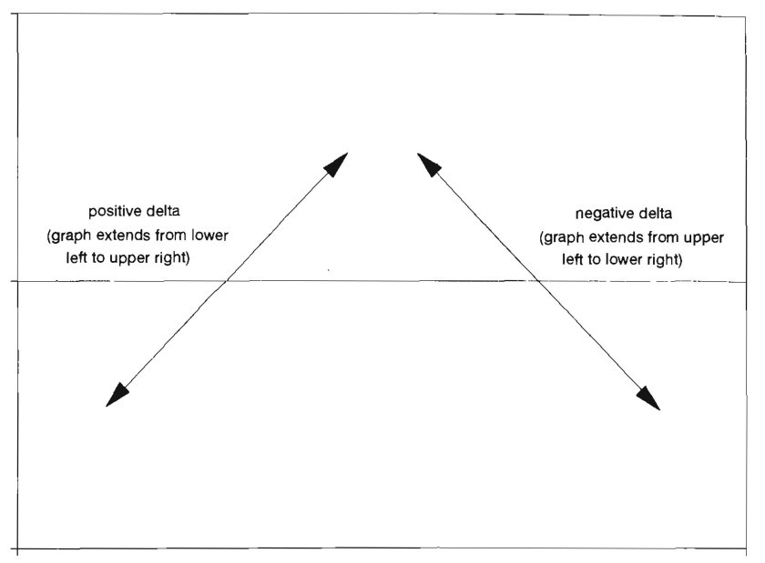
- Gamma - A positive gamma position will begin to bend upward as
underlying price moves away from the current price in either
direction. This reflects the fact at a positive gamma position
likes movement. The graph of such a position will take on a
generally convex shape (a smile). A negative gamma position will
begin to bend downward as the underlying price moves away from the
current price in either direction. This reflects the fact that a
negative gamma position prefers for the market to sit still. The
graph of such a position will take a generally concave shape (a
frown).
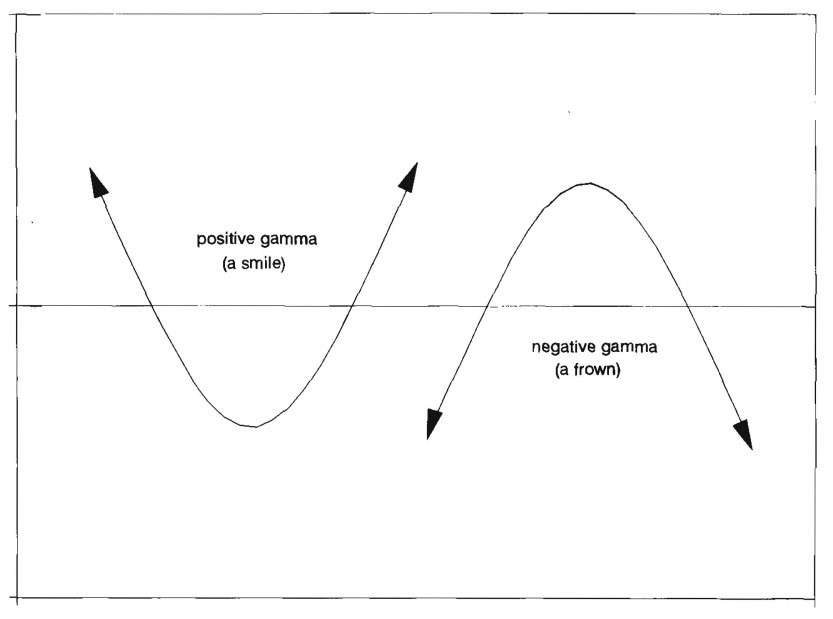
- Theta - As time passes a positive theta position will become more
valuable, and the graph of such a position wil1 shift upward. As
time passes a negative theta position will becorne less valuable,
and the graph will shift downward.
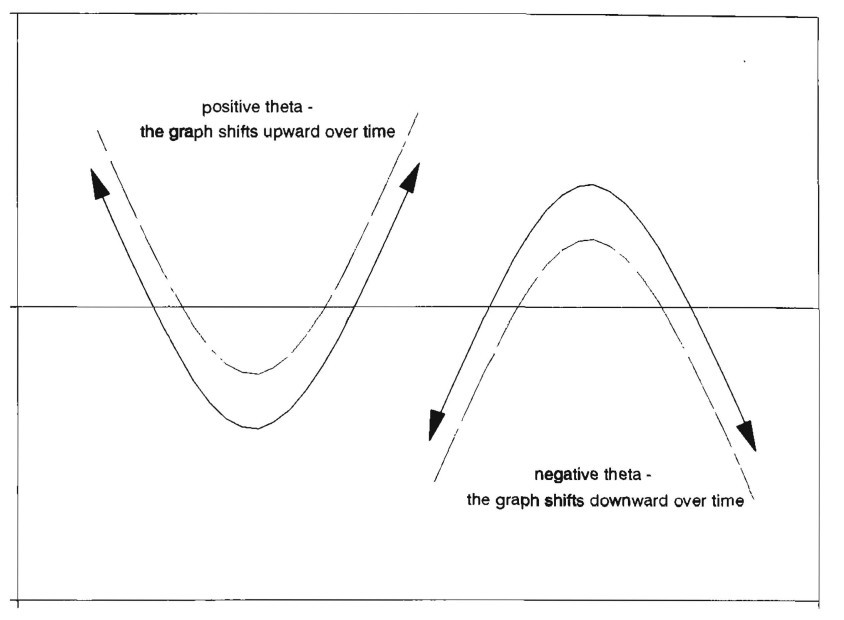
- Vega - A positive vega position will be helped by
increasing volatility and hurt by declining volatility. The graph
of such a position will shift upward when volatility increases and
downward when volatility decreases. A negative vega position will
be hurt by increasing volatility and helped by declining
volatility. The graph of is position will shift downward when
volatility increases and upward when volatility decreases.
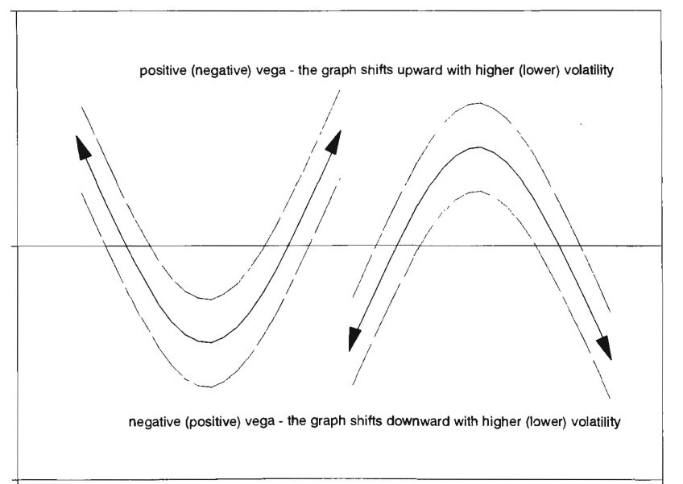
Note at time and volatility have similar effects on an option position. But unlike time, which can only move in one direction, volatility can either rise or fall.
A COMPLEX POSITION
FUTURES OPTION POSITIONS
Models and the Real World
The accuracy of values generated bya theoretical pricing model rests on two points: the accuracy of the assumptions upon which the model is based, and the accuracy of the inputs into the model.
list the most important assumptions built into a traditional pricing model:
- Markets are frictionless a. The underlying contract can be freely bought or sold, without restriction b. There are no tax consequences associated with trading c. Everyone can borrow and lend money freely,and one interest rate applies to all transactions d. There are no transaction costs
- Interest rates are constant over life of an option
- Volatility is constant over the life of an option
- Trading 1s continuous with no gaps in the price changes of an underlying instrument
- Volatility is lndependent of the price of the underlying contract
- Over short periods of time percent price changes in an underlying contract are normally distributed, resultlng in a lognormal distribution of underlying prices at expiration
MARKETS ARE FRICTIONLESS
The underlying contract cannot a1ways be freely bought or sold; there are sometimes tax consequences; a trader cannot always borrow and lend money freely, nor at the same rate; there are always transaction costs.
The most serious flaw in the frictionless markets hypothesis is the assumption at there are no transaction costs. While a strategy might or might not be affected by tax or interest rate considerations, there are always transaction costs.
INTEREST RATES ARE CONSTANT OVER THE LIFE OF AN OPTION
While a changing interest rate will cause the value of a trader's option position to change, interest rates usually do not change in a way which will have a significant impact on an option's value,at least in the short run. Since the effect of changing interest rates is a function of time to expiration,and si ce most listed options have terms of less than ni months, interest rates would have to change violently to have an impact on any but the most deeply in-the-money options.
With the introduction of long-term equity options, known as LEAPs, the consequences of changing interest rates may well become more of a concern.
VOLATILITY IS CONSTANT OVER THE LIFE OF THE OPTION
even if one knows actual volatility over the life of an option,a model will tend to undervalue at-the-money options in a rtsing volatility market,and overvalue at-the-money options in a falling volatility market.
We have only considered one alternative volatility scenario, where volatility is either increasing or decreasing. But there are an infinite number ofpaths which volatility might follow over life of an option. Atrader might even assume that volatility is itself random, and at predicting volatility with any degree of accuracy is not possible. Models which assume stochastic volatility do exist and might, under some conditions, be more suitable than a traditional pricing model. At the same time, such models add another dimension of complexity to a trader's life, and for this reason are not widely used.
TRADING IS CONTINUOUS
A diffusion process is a convenient, but clearly inexact, approximation of how prices change in the real world. Exchange-traded contracts cannot follow a pure diffusion process because exchanges are not open 24 hours per day.
A trader who is short straddles does not want to see a gap in the market.
Theoreticians tend to agree that underlying contracts in most markets follow a combination ofboth a diffusion process and a jump process.
Avariation of the Black-Scholes model which assumes that the underlying contract follows a jump-diffusion process has in fact been developed. Unfortunately, the model is considerably more complex mathematically than the traditional Black-Scholes model. Moreover, in addition to the five customary inputs, the model also requires two new inputs: the average size of a jump in the underlying market, and the frequency with which such jumps are likely to occur.
VOLATIUTY IS INDEPENDENT OF THE PRICE OF THE UNDERLYING CONTRACT
In other words, the volatility ofa market is not independent of the price of the underlying contract. On the contrary, the volatility over time seems to be dependent on the direction of movement in the underlying contract. In some cases a trader expects the market to become more volatile if the movement is downward and less volatile if the movement is upward; in other cases a trader expects the market to become more volatile if the movement is upward and less volatile if the movement is downward.
Because volatility in some markets does seem to be dependent on the price of the underlying contract, a further variation of the Black-Scholes model has been proposed. The constant-elastictty ofvariance,or CEV, mode1 8 is based on an assumed relationship between volatility and the price level of the underlying contract. This relationship determines the probability of price moves of various magnitudes at each moment in time. Price changes are stil1 random under a CEV assumption,but the randomness varies with the price of the underlying contract.
SKEWNESS AND KURTOSIS
A perfectly normal distribution can be fully described by its mean and standard deviation. But two other numbers, the skewness and kurtosis, are often used to describe the extent of the difference between an actual frequency distributlon and a true normal distribution.
If a distribution is positively skewed, the right-hand tail is longer an the left-hand tail. If the distribution is negatively skewed,the left-hand tail is longer than the right-hand tail. A true normal distribution has askewness of zero.
Adistribution with a positive kurtosis has a tal1, pointed peak (leptokurtic), while a distribution with a negative kurtosis has a low, flat peak (platykurtlc). Aperfectly normal distribution has a kurtosis of zero (mesokurtlc).